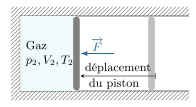

Un système thermodynamique présente une propriété énergétique qui a la particularité d’être
indépendant de l’observateur et de ne dépendre que d’un petit jeu de variables d’état. Cette
énergie interne est l’acteur principal du premier principe de la
thermodynamique.
Transformations thermodynamiques
Transformation réversible
Une transformation thermodynamique est un processus qui fait passer le système d’un état
d’équilibre initial (1) vers un nouvel état d’équilibre final (2).
On qualifie une transformation en fonction des conditions extérieures ou des conditions
internes (voir tableau ci-dessous).
Différents types de transformations.
Transformation
Contrainte
monobare
\(p^{\rm{ext}} = \rm{C^{te}}\)
monotherme
\(T^{\rm{ext}} = \rm{C^{te}}\)
isotherme
\(T = \rm{C^{te}}\)
isobare
\(p = \rm{C^{te}}\)
ischore
\(V = \rm{C^{te}}\)
cyclique
état initial = état final
Une transformation particulière joue un rôle central en thermodynamique : la
transformation réversible.
Définition :
Un système évolue de façon réversible si :
le système est continuellement en équilibre thermodynamique durant la
transformation
une modification infinitésimale d’une contrainte extérieure suffit à inverser le sens
de la transformation
Une transformation réversible est une idéalisation, car en réalité toute transformation
suppose l’existence d’un déséquilibre initial pour faire évoluer le système. Il faut voir ce
type de transformation comme un processus limite.
Exemple : compression isotherme réversible
Considérons une enceinte contenant un gaz séparé de l’extérieur par un piston mobile pouvant
se déplacer sans frottement. La paroi est diatherme. L’extérieur impose une pression \(p_1\)
et une température \(T_1\). L’état thermodynamique initial est caractérisé par la pression
\(p_1\) et la température \(T_1\).
Compression isotherme réversible.
À partir de l’instant \(t_1\), on pousse lentement sur le piston de façon à ce que le piston
se déplace à une vitesse quasi-nulle. La pression extérieure croît très lentement jusqu’à
\(p_2\) atteinte à l’instant \(t_2\). À chaque instant, le gaz est en équilibre avec
l’extérieur car le temps de réponse du système est beaucoup plus court que la durée de la
compression.
Si l’on décroît lentement la pression extérieure pour revenir à la pression \(p_1\), le gaz
va repasser par les mêmes états d’équilibre pour revenir à l’état \((p_1,T_1)\). La
transformation est réversible.
Transformation irréversible
La transformation réversible suppose réunies deux conditions. Si au moins une des deux
conditions n’est pas vérifiée, alors la transformation est irréversible.
Système pas à l’équilibre lors des états intermédiaires
Par exemple, imaginons une enceinte constituée d’un gaz en équilibre thermodynamique. La
pression et la température sont initialement uniformes et stationnaires. Les parois de
l’enceinte sont adiabatiques et un piston mobile assure l’équilibre mécanique
initiale : \(p = p^{\rm{ext}}\). À \(t=t_0\) la pression extérieure augmente
brutalement de \(p^{\rm{ext}}\) à \(p^{\rm{ext}} + \Delta p\). Ce déséquilibre met en
mouvement le piston et le gaz passe par des états où sa densité, sa température et même sa
pression ne sont plus, ni uniformes ni stationnaires. Il faut un certain temps, après que le
piston se soit immobilisé pour que les paramètres intensifs s’égalisent en tout point du
système. Si on relâche la surpression, le gaz évolue sans passer par des états d’équilibre,
et atteint un état d’équilibre différent de l’état initial. La transformation n’est
pas réversible.
Compression brutale : les états intermédiaires ne sont pas des états
d’équilibre.
Système soumis à des phénomènes dissipatifs
Reprenons l’exemple qui nous a servi à illustrer la transformation réversible, et imaginons
la présence de frottements solides entre le piston et les parois de l’enceinte. Déplaçons de
manière quasi statique le piston en augmentant progressivement la pression extérieure. Si
l’on note \(f\) l’ensemble des forces de frottement qui agit sur le piston d’aire \(S\),
l’équilibre des forces se traduira par :
$$
\quad p^{\rm{ext}} = \begin{cases}
p + \frac{f}{S} \quad \text{pendant la compression}\\
p - \frac{f}{S} \quad \text{pendant la détente}
\end{cases}
$$
Si l’on impose une pression extérieure qui croît à partir de \(p_1\) puis décroit jusqu’à
\(p_1\), on constate que la pression du gaz elle ne reviendra pas à la valeur initiale (A et
B ne sont pas à la même pression). Lorsque la pression extérieure commence à décroître, le
piston lui reste immobile car il faut attendre que la différence de pression dépasse un
certain seuil pour mettre en mouvement le piston. De ce point de vue, une modification
infinitésimale de la pression extérieure ne suffit pas à inverser le sens de la
transformation. La transformation est ici quasi statique mais non réversible
du fait des frottements.
Transformation quasi statique mais non réversible.
Causes d’irréversibilités
Une transformation est d’autant plus irréversible qu’elle est le siège de :
gradients de concentration (diffusion), de température (diffusion thermique), de
pression (déséquilibre mécanique), etc
Échanges énergétiques
Premier Principe
Expérience
Plaçons un gaz parfait dans une enceinte adiabatique munie d’un piston mobile. À \(t=0\) on
exerce une force supplémentaire \(\overrightarrow{F}\) sur le piston, ce qui comprime le
gaz. Ce dernier subit une transformation irréversible qui l’amène à un nouvel état
d’équilibre.

Du point de vue énergétique, on a fourni un travail mécanique \((W^\text{ext} = \int
\overrightarrow{F} \cdot \overrightarrow{\mathrm{d}\ell} \gt 0)\) mais l’énergie cinétique
macroscopique du gaz à l’état initial et final est nul puisque le gaz est au repos du point
de vue macroscopique. Il semble donc y avoir une contradiction avec le théorème de l’énergie
cinétique :
d’un côté \(\mathcal{E}_\text{c, initiale} = \mathcal{E}_\text{c, finale}\)
et de l’autre \(\Delta \mathcal{E}_c = W^\text{ext} \gt 0\)
Analyse
Pour lever ce paradoxe, il faut comprendre que le travail fourni a été converti en une forme
d’énergie microscopique. En effet, il y a deux échelles qui peuvent faire l’objet
d’échange d’énergies. Ici l’énergie cinétique présente une part liée au mouvement collectif
(macroscopique) et une autre part liée au chaos moléculaire (microscopique) :
$$
\quad \Delta \left( \mathcal{E}_c^\text{macro} + \mathcal{E}_c^\text{micro} \right)
= W^\text{ext} \gt 0
$$
d’où
$$
\quad \Delta \left( \mathcal{E}_c^\text{micro} \right) = W^\text{ext} \gt 0
$$
La compression adiabatique s’accompagne donc d’une augmentation de l’agitation moléculaire,
ce qui conduit à l’augmentation de la température.
Le lecteur attentif aura sans doute noté que le théorème de l’énergie cinétique ne s’écrit
pas \(\Delta \mathcal{E}_c = W^\text{ext}\), mais plutôt \(\Delta \mathcal{E}_c =
W^\text{ext} + W^\text{int}\), avec \(W^\text{int}\) le travail des forces internes au
système. Dans notre expérience de pensée, il s’agissait d’un gaz parfait, c’est-à-dire un
système pour lequel on néglige toute interaction intermoléculaire. C’est pourquoi on a bien
\(\Delta \mathcal{E}_c = W^\text{ext}\). En revanche, dans les systèmes réels, les molécules
interagissent à l’échelle microscopique via un potentiel d’interaction (par exemple
l’interaction de van der Waals) et l’on peut écrire
\( W^\text{int} = - \Delta \mathcal{E}_p^\text{int}\), de sorte que pour une compression
adiabatique, on écrirait :
$$
\quad \Delta ( \mathcal{E}_c^\text{macro} +
\underbrace{\mathcal{E}_c^\text{micro}+\mathcal{E}_p^\text{int}}_{\text{énergie interne}}
) = W^\text{ext} \gt 0
$$
Finalement, notre bilan d’énergie doit tenir compte d’une contribution microscopique appelée
énergie interne, et notée \(U\).
La thermodynamique postule que ce concept d’énergie interne est général, et qu’en plus elle
n’est fonction que des variables d’état.
Énoncé
Tout système thermodynamique présente une énergie propre, notée \(\mathcal{E}\), aux
propriétés suivantes :
\(\mathcal{E}\) se conserve si le système est isolé
\(\mathcal{E}\) est la somme de l’énergie cinétique macroscopique et de l’énergie
interne liée à des degrés de liberté microscopiques :\( \quad \mathcal{E} =
\mathcal{E}_c^\text{macro} + U \)
\(U\) est une grandeur additive et extensive, fonction des variables d’état
En conséquence, l’énergie interne d’un système thermodynamique est définie de la même façon
pour tous les observateurs : elle n’est pas liée à un référentiel d’étude
particulier.
Transfert macroscopique ou travail
Les échanges d’énergie entre un système et le milieu extérieur peuvent être de nature
microscopique ou macroscopique. On notera \(W\) tout transfert d’énergie qui peut
s’interpréter comme le travail mécanique de forces macroscopiques qui s’appliquent au
système. On adopte la convention suivante :
\(W \gt 0\) quand le système reçoit de l’énergie
\(W \lt 0\) quand le système donne de l’énergie
Pour une transformation infinitésimale, le travail s’écrira :
$$
\quad \delta W = Y^\text{ext} \mathrm{d} X
$$
où \(Y^\text{ext}\) est un paramètre intensif qui décrit l’action de l’extérieur, et \(X\)
une variable extensive du système. On dit que \(Y\) et \(X\) sont des variables
conjuguées. Pour calculer le travail échangé avec le système il faut intégrer le long du
chemin suivi par la transformation :
$$
\quad W_{1 \to 2} = \int_{(1)}^{(2)} Y^\text{ext} \mathrm{d} X
$$
Notons que le résultat de cette intégrale dépend a priori de la nature de la transformation,
car les forces extérieures ne dérivent pas nécessairement d’une énergie potentielle.
De ce fait, le travail infinitésimal ne s’exprime pas comme la différentielle d’une
fonction. C’est pourquoi, on utilise la notation \(\delta W\) et non \(\mathrm{d} W\) qui
est à réserver aux différentielles totales exactes.
Travail d’une traction
Considérons un câble tendu en équilibre thermodynamique caractérisée par sa température
\(T\), la longueur \(\ell\) et sa tension \(F\). Un Opérateur exerce une force de traction
\(\overrightarrow{F}^\text{ext}\) ce qui produit l’allongement du câble. Le travail fourni
s’écrit :
$$
\quad W_{1 \to 2} = \int_{(1)}^{(2)} F^\text{ext} \mathrm{d}\ell
$$
Pour effectuer le calcul il est nécessaire de connaître la fonction \(F^\text{ext}(\ell)\).
Travail mécanique sur un câble.
Travail des forces de pression
Imaginons un fluide dans une enceinte dont une partie de la paroi est mobile.
L’environnement extérieur agit sur cette partie mobile via une force de pression
\(p^\text{ext}\). Si l’on note \(S\) l’aire de la paroi mobile et \(\mathrm{d}x\) son
déplacement infinitésimal, le travail des forces de pression s’écrit :
$$
\quad \delta W = F^\text{ext} \mathrm{d}x = p^\text{ext} S \mathrm{d}x
$$
Pendant cette transformation infinitésimale, le volume du système varie de \(\mathrm{d}V =
-S \mathrm{d}x\), le signe \(-\) traduisant le fait que \(V\) diminue quand \(x\) augmente.
Finalement, on obtient :
$$
\quad \boxed{ \delta W = -p^\text{ext} \mathrm{d}V
\Rightarrow W = - \int_{(1)}^{(2)} p^\text{ext} \mathrm{d}V }
$$
Là encore, pour effectuer le calcul il faut connaître la relation \(p^\text{ext}(V)\).
Travail des forces de pression.
Dans le cas d’une transformation réversible, le système est à l’équilibre mécanique avec
l’extérieur de sorte qu’à chaque instant \(p^\text{ext} = p\). On a donc :
$$
\quad W^\text{rev} = - \int_{(1)}^{(2)} p \mathrm{d}V
$$
où \(p\) est donné par l’équation d’état du système. Géométriquement, \(|W|\) correspond à
l’aire sous la courbe du graphe \(P(V)\).
Interprétations géométriques.
Si le système décrit un cycle dans l’espace \(p - V\), alors on retiendra que :
l’aire du cycle correspond au travail échangé pendant un cycle
si le cycle est décrit dans le sens horaire, ce travail est fourni par le système
si le cycle est décrit dans le sens anti-horaire, ce travail est reçu par le
système
Transfert thermique
Définition :
On appelle \(Q\), transfert thermique reçu par le système, tout échange d’énergie qui ne
peut s’exprimer comme un travail macroscopique. Autrement dit,
$$
\quad \boxed{ Q \overset{\text{def}}{=} \Delta \mathcal{E} - W }
$$
\(Q\) s’exprime donc en joules dans le Système international d’unités.
Ce transfert thermique, ou chaleur, se déroule à un niveau microscopique, via
différents modes, comme :
la conduction : transfert d’énergie thermique lié à un gradient de température
sans déplacement de matière
la convection : transfert thermique associé au mouvement d’un fluide
le rayonnement : transport d’énergie par onde électromagnétique
Conséquences
Comme il n’existe que deux modes de transferts (macroscopique ou thermique), la conservation
de l’énergie se traduit pas la relation :
$$
\quad \boxed{ \Delta \mathcal{E} = \mathcal{E}_\text{finale} - \mathcal{E}_\text{initiale}
= W + Q }
$$
Nous nous placerons souvent dans la situation où le système est au repos dans ses états
initial et final. Dans ce cas, le premier principe prendra la forme :
$$
\quad U_\text{finale} - U_\text{initiale} = W + Q
$$
Formulation différentielle du premier principe
Le premier principe énonce que l’énergie est une fonction d’état. Par conséquent, sa
variation entre deux états d’équilibre ne dépend pas du type de processus qui a
permit de transformer le système. On peut donc toujours envisager une transformation
réversible pour calculer la variation d’énergie. Il faut juste veiller à ce que la
transformation réversible choisie soit compatible avec l’état initial et l’état final.
Le calcul de \(\Delta U\) ne dépend pas du chemin.
Entre deux états d’équilibres successifs le long d’un chemin réversible, on a :
$$
\quad \mathrm{d} U = \delta W^\text{rev} + \delta Q^\text{rev}
= \underbrace{- p \mathrm{d}V}_{\text{pression}}
+ \underbrace{Y \mathrm{d} X}_{\text{autre}}
+ \underbrace{\delta Q^\text{rev}}_{\text{thermique}}
$$
Par intégration, on obtient :
$$
\quad \Delta U = \int_{rev} - p \mathrm{d}V + Y \mathrm{d}X + \delta Q^\text{rev}
$$
Applications
Détente de Joule Gay-Lussac
En 1806 Gay-Lussac réalise une expérience qui consiste à détendre un gaz dans le vide. Plus
précisément, deux récipients aux parois adiabatiques peuvent être mis en communication par
ouverture d’un robinet. L’un contient un gaz à la pression \(p_1\), l’autre est vide. À
l’ouverture du robinet, le gaz se détend de façon irréversible. On cherche à mesurer la
variation de température entre l’état initial et l’état final.
Description de la détente de Joule-Gay-Lussac.
Cette expérience a été reprise par Joule en 1845, et Hirn en 1865, lesquels confirmèrent les
premières conclusions de Gay-Lussac.
La détente s’accompagne d’une légère variation de température qui dépend de la nature du gaz
et des conditions initiale et finale. Par exemple, la détente d’une mole de dioxyde de
carbone initialement à 20 °C et a 1 atm s’accompagne d’une variation
\(\Delta T = T_2 - T_1 = -0,27\,°C\) lorsque le volume double.
Lorsque la pression initiale tend vers 0, la variation \(\Delta T\) tend vers 0.
En d’autres termes, lorsque le gaz tend vers le gaz parfait alors la détente de
Joule-Gay-Lussac ne s’accompagne d’aucune variation de température. Ce fait expérimental a
une conséquence sur l’énergie interne d’un gaz parfait. En effet, que dit le premier
principe ?
$$
\quad \Delta \mathcal{E}_c + \Delta U = W + Q
$$
Or \(Q=0\) car la détente est adiabatique, \(W=0\) car la détente se fait dans le vide et
\(\mathcal{E}_c=0\).
Il en découle que \(U_\text{finale} = U_\text{initiale}\) lors d’une détente de Joule
Gay-Lussac. Or, l’énergie interne, en tant que fonction d’état, ne dépend que de \(n\),
\(T\) et \(V\). Par conséquent, la température finale \(T_2\) vérifie l’équation :
$$
\quad U(n,T_1,V_1) = U(n,T_2,V_2)
$$
Dans le cas d’un gaz parfait, on a \(T_1=T_2\). Le gaz parfait vérifie donc la
propriété :
$$
\quad U(n,T_1,V_1) = U(n,T_1,V_2) \quad \forall (V_1,V_2)
$$
ce qui signifie que l’énergie interne d’un gaz parfait ne dépend pas du volume, mais
seulement de la température et de sa quantité de matière (ou de sa masse). Il s’agit de la
première loi de Joule.
Le gaz parfait :
Un gaz parfait présente deux propriétés :
$$
\quad \boxed{ \begin{cases}
pV = nRT \quad &\text{équation d’état}\\
U_\text{GP} = U(n,T)\quad &\text{première loi de Joule}
\end{cases} }
$$
Interprétation microscopique
La première loi de Joule est présentée ici comme un fait expérimental. On peut cependant lui
donner une assise théorique grâce à un modèle microscopique. En effet, si nous considérons
un gaz parfait monoatomique, l’énergie interne se résume à la somme des énergies cinétiques
des particules :
$$
\quad E = \sum_{i=1}^{N} \frac{1}{2} m {\overrightarrow{v_i}}^2
$$
où \(\overrightarrow{v_i}\) sont les vitesses des particules. L’énergie est une quantité
aléatoire du fait du caractère aléatoire des vitesses (hypothèse du chaos moléculaire).
Cependant, dans l’approximation thermodynamique les fluctuations sont invisibles à l’échelle
macroscopique, et l’énergie interne se confond avec l’énergie moyenne :
$$
\quad U = \overline{E} = \sum_{i=1}^{N} \overline{e_c}
$$
Or, l’énergie cinétique moyenne des particules est proportionnelle à la température via la
relation \(\overline{e_c} = \frac{3}{2}k_BT\). On trouve donc :
$$
\quad U = \frac{3}{2}Nk_BT = \frac{3}{2}nRT
$$
ce qui manifestement ne dépend que des variables \(T\) et \(n\). Le modèle statistique va
donc plus loin que la thermodynamique classique en prévoyant que l’énergie interne d’un gaz
parfait monoatomique est proportionnelle à la température.
Attention, cette formule n’est plus valide pour un gaz polyatomique, car l’énergie cinétique
moléculaire présente une contribution due aux mouvements de rotation et de vibration. Quand
on tient compte de ces degrés de liberté on trouve une énergie interne supérieure à
\(\frac{3}{2}nRT\) mais qui respecte toujours la première loi de Joule.
Compression monotherme d’un gaz parfait
Plaçons un gaz parfait dans une enceinte diatherme munie d’un piston mobile sans frottement
de masse négligeable. Comprimons le gaz de façon à ce que la pression passe de la valeur
\(p_1 = 1\,\rm{bar}\) à \(p_2 = 2\,\rm{bar}\), la température extérieure restant constante.
Envisageons deux types de compressions.
Compression monotherme d’un gaz parfait.
Compression réversible
La transformation est une succession d’états d’équilibre durant laquelle à chaque instant
l’équilibre thermique et l’équilibre mécanique du piston se traduisent par :
$$
\quad \begin{cases}
T = T^\text{ext} = \rm{C^{te}} \\
p^\text{ext} = p = \frac{nRT^\text{ext}}{V}
\end{cases}
$$
Appliquons le premier principe entre l’état initial et final :
$$
\quad \Delta U = U(n,T^\text{ext}) - U(n,T^\text{ext}) = 0 = Q +W
$$
Le transfert thermique est donné par \(Q = - W\) avec \(W\) le travail des forces de
pression. L’évolution étant quasi-statique on a :
$$
\quad W = -\int_{V_1}^{V_2} p \mathrm{d}V
= -\int_{V_1}^{V_2} \frac{nRT^\text{ext}}{V} \mathrm{d}V
= -nRT^\text{ext} \ln \left( \frac{V_2}{V_1} \right)
$$
Ici, vu que la température du gaz reste constante, on a \(p_1V_1 =p_2V_2\), c’est-à-dire
\(V_2/V_1 =p_2/p_1 = 1/2\). Finalement, on obtient :
$$
\quad W = nRT^\text{ext} \ln 2
$$
et
$$
\quad Q = - nRT^\text{ext} \ln 2 \lt 0
$$
Il y a évacuation de chaleur pendant la compression.
Compression monotherme irréversible
À \(t=0\), on impose \(p^\text{ext} = p_2 \gt p_1\), par exemple en posant brutalement une
grosse masse sur le piston. Durant, la transformation, la température et la pression varient
de façon complexe en chaque point du gaz et au cours du temps : la transformation
n’est pas quasi-statique. Toutefois, on connaît l’état final d’équilibre :
$$
\quad \begin{cases}
p_2 = 2\,\rm{bar} \\
T_2 = T^\text{ext}
\end{cases}
\Rightarrow p_2V_2 = p_1V_1
$$
Le premier principe donne le même résultat que précédemment, à savoir \(\Delta U = 0 =
Q^{\prime} + W^{\prime}\). La différence réside dans les transferts, car la transformation
est différente. Calculons le travail des forces pressantes :
$$
\quad W^{\prime} = -\int_{V_1}^{V_2} p^\text{ext} \mathrm{d}V
= -p_2 \int_{V_1}^{V_2} \mathrm{d}V
= -p_2 (V_2 - V_1) = V_1(p_2 - p_1)
$$
On a supposé \(p_2 = 2 p_1\) d’où \(W^{\prime} = p_1V_1 = nRT^\text{ext}\). Ainsi, cette
compression monotherme provoque aussi une évacuation d’énergie thermique \(Q^{\prime} =
-nRT^\text{ext}\). On remarque que \(|Q^{\prime}| \gt |Q|\).
De plus, on peut vérifier que si l’on enlève la masse posée sur le piston (on impose
\(p^\text{ext} = p_1\)), le gaz reviendra dans son état d’équilibre initial, sans toutefois
repasser par le chemin emprunté pendant la compression. Notamment, durant la phase de
détente le système ne va pas récupérer toute l’énergie thermique perdue pendant la phase de
compression. On montre que \(Q^{\prime\prime}=\frac{1}{2} nRT^\text{ext}\) durant la détente.
Ainsi, lors de la transformation cyclique irréversible \((p_1, V_1, T^\text{ext})
\rightarrow (p_2, V_2, T^\text{ext}) \rightarrow (p_1, V_1, T^\text{ext})\), le système aura
perdu une énergie thermique égale à
\(|Q\prime - Q^{\prime\prime}| = \frac{1}{2} nRT^\text{ext}\).
Cette énergie thermique est irrécupérable ; on parle d’énergie dégradée.
De manière générale, plus une transformation est irréversible, plus on dégrade de l’énergie.